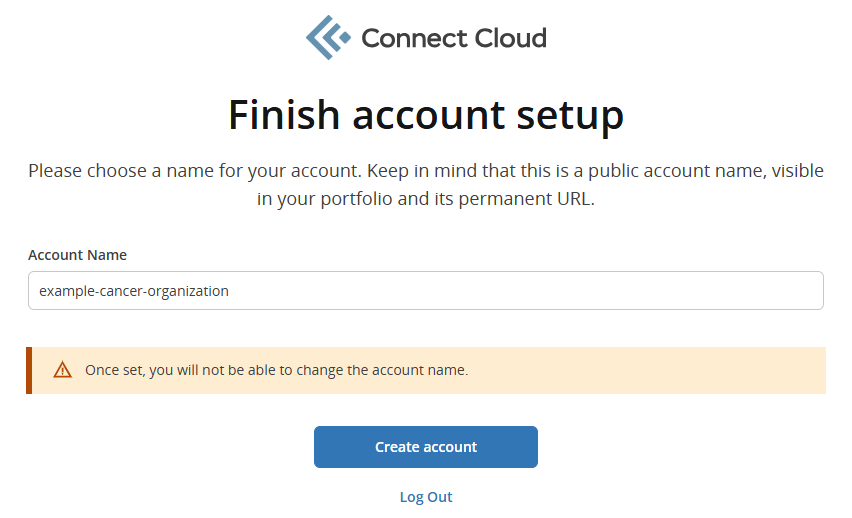
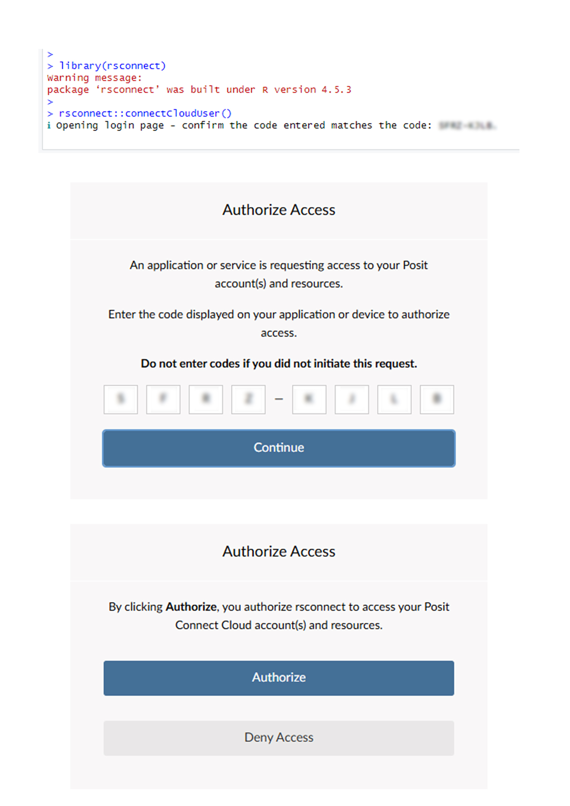
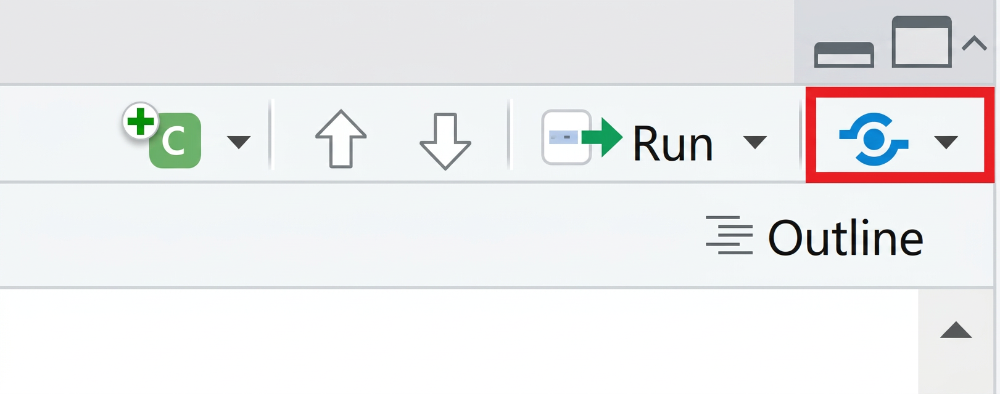
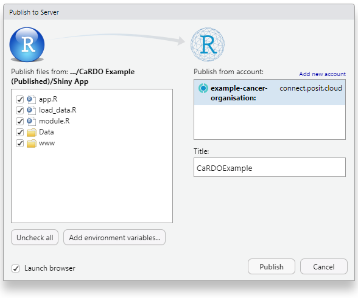

Chapter 7 Publishing
Once you have created a dashboard, you will need to decide how to publish it to allow users to access your dashboard and explore cancer patterns and trends.
There are several options available, however, we recommend using Posit Connect Cloud. Connect Cloud is a cloud-based hosting platform by Posit that allows users to easily publish (within RStudio) and share Shiny applications online without requiring server management. It offers multiple pricing tiers, including a free option, making it an accessible choice for individuals and small organizations. Connect Cloud is also the new home for Posit’s earlier hosting service, shinyapps.io, which is being retired. If you have published a dashboard on shinyapps.io before, see Section 7.2 at the end of this chapter.
Connect Cloud does have security limitations that you should be aware of - Connect Cloud is a hosted platform. This means that your dashboard, and the data files it contains, are uploaded to and stored on servers outside of your infrastructure. On the free plan, dashboards are also publicly accessible to anyone with the link. For these reasons, we do not recommend Connect Cloud for highly sensitive data. This is why we stress confirming that your data is fit for public consumption before publishing your dashboard, and why CaRDO is specifically designed to handle sensitive data locally, before it is published. Cancer Council Queensland uses Posit’s hosting platforms to publish their cancer statistics dashboard.
Detailed summaries of alternative publishing options and their strengths and limitations are available here and here
7.1 Publishing with Connect Cloud
A detailed guide to publishing from within RStudio is available in the Connect Cloud documentation. Below we provide a summary of the key steps to follow. Everything is done from within RStudio and your web browser, so you don’t need any other tools.
There are several ways to publish to Connect Cloud, so don’t be thrown if you see other approaches elsewhere. We’ll show you what we think is the simplest method: publishing directly from RStudio.
Step 1 - setup your account
To publish your dashboard, you’ll first need a free account on Posit Connect Cloud (you can upgrade to a paid plan later if necessary, more on this below). Several sign-up methods are available, but we recommend keeping it simply: email address and password.
Important: Connect Cloud includes your account name in the URL of everything you publish. Your public profile page, which lists all of your public content, lives at https://connect.posit.cloud/[Account Name] (for individual Free, Basic and Enhanced accounts), and anyone with the link can view it without logging in. Each dashboard is published at an address of the form https://[Account Name]-[Application Name].share.connect.posit.cloud. For this reason, we recommend making your account name something relevant to your registry or organisation that you wish to see in your dashboard URL. Cancer Council Queensland uses cancercouncilqueensland.

Once your account is set up, Connect Cloud will prompt you to publish your dashboard. Again, there are numerous methods and the choices can feel overwhelming - ignore them for now. Below, we walk you through our preferred approach: publishing through the RStudio console. Jump back into RStudio, but keep your Connect Cloud browser tab open.
Step 2 - Connect your account
We need to link RStudio to Connect Cloud. Install the latest rsconnect package by running this code in your RStudio console.
Once installed, load rsconnect into your R session.
Finally, make the connection by running the code below. When your browser opens, confirm the code matches the one in your RStudio console, then click Continue and Authorize. Note don’t share your link code with others - treat it like a password.

Step 4 - deploy/publish
You’re now ready to publish your CaRDO dashboard! With your app.R file open, click the publish icon in the top right corner, next to run. Alternatively, you may run the code below.

You should see your Posit Connect Cloud account in the right field. Select the files to be published: broadly, these will include your app.R file, any other data files, and any image and css (www folder) files. The specific files required for CaRDO are the following:
- app.R
- load_data.R
- module.R
- Data
- www

Give your dashboard a name and hit Publish. The publishing process will take a moment. When it has finished, your web browser will open at your dashboard’s page within Connect Cloud. Your dashboard is now published! You can copy the dashboard specfic URL to view the dashboard outside of Posit Connect Cloud.
Step 5 - Customise URL
Before sharing, customise your URL. Annoyingly, the default is to publish your dashboard to a random character string - that won’t do for us. Select your dashboard in Connect Cloud and click settings in the top right . Select URL on the left, toggle Customize your URL on and give your dashboard a URL name.
7.1.1 And that’s a wrap
Your CaRDO dashboard is ready to share - communicate timely, population-level cancer statistics with clarity and purpose. Sharing this data helps raise awareness of cancer trends, highlight disparities, and inform evidence-based action across research, policy, and care.
The remainder of this handbook provides details on updating your CaRDO dashboard when new cancer data becomes available, CaRDO methods, references, and citation & Contact information. Once again, if you use CaRDO, please get in touch at statistics@cancerqld.org.au. Knowing who uses CaRDO helps us demonstrate its impact and secure future funding. We’d also love to hear any questions, concerns or feedback you might have.
Thank you for using CaRDO.
7.1.2 Pricing
A quick note on pricing. Connect Cloud has a range of plans to suit different needs. By default, users can start with the free plan, which allows limited deployment with restrictions on the number of applications, active hours and compute resources. Paid plans increase these limits and add features such as private sharing. Note that on the free plan your dashboard is always publicly accessible - we assume this is not a concern, as CaRDO dashbaords are designed to share population-level statistics with a broad audience. You can find more details on plans and pricing here.
The free plan is well suited to trying things out and to small, low-traffic dashboards. For small to medium-sized organisations running dashboards in regular use, we’d expect the Basic plan to be the practical starting point. The CaRDO software is free and open source, but reliable hosting at scale usually isn’t, so budget for this early on. Where alternative low-cost hosting options become available, we will aim to update them here.
7.2 Already using shinyapps.io?
If you have previously published a CaRDO dashboard on shinyapps.io, or already have a shinyapps.io account, there is something you should know: Posit is retiring shinyapps.io and moving all of its users to Connect Cloud. Your dashboard will not disappear overnight and you do not need to take any action right now. In brief, here is what to expect:
- You choose how and when you move. Posit provides a self-serve migration tool in Connect Cloud. You link your shinyapps.io account, select your dashboard, and test it on Connect Cloud before you finalize the move. If you would rather not use the tool, Posit will migrate accounts automatically in waves during 2027: free accounts from 28 January 2027, Starter and Basic accounts from 31 March 2027, and Standard and Pro accounts from 30 June 2027.
- Your links keep working. Once a dashboard has been migrated, its old shinyapps.io address will redirect to its new home on Connect Cloud, so links you have already shared will not break.
- Most dashboards will run unchanged. We recommend testing yours on Connect Cloud before finalizing the move.
- Paid plans carry over. Posit will give you an equivalent Connect Cloud plan at no charge, and your current pricing is retained. If you pay for shinyapps.io, do not cancel your subscription until the migration is complete.
- Updating from RStudio. If you have been updating your dashboard using the publish button in RStudio, note that migrating does not change where RStudio publishes to - it will keep sending updates to shinyapps.io until you repoint it. Posit explains how in their migration guide.
Full details, including timelines, plan mapping and troubleshooting, are available in Posit’s migration guide. These details were correct at the time of writing, but Posit may update them, so please check the guide for the latest information. We will also add step-by-step instructions for migrating a CaRDO dashboard to a future version of this handbook.